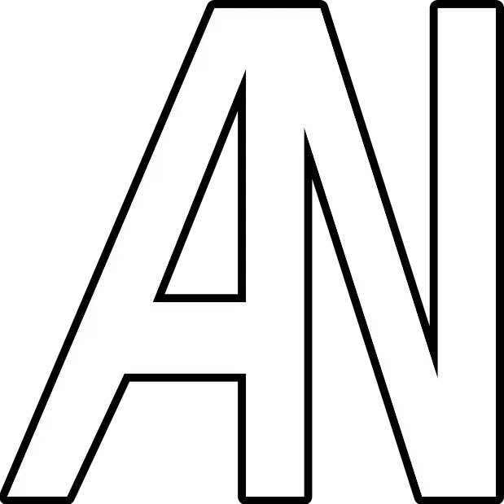
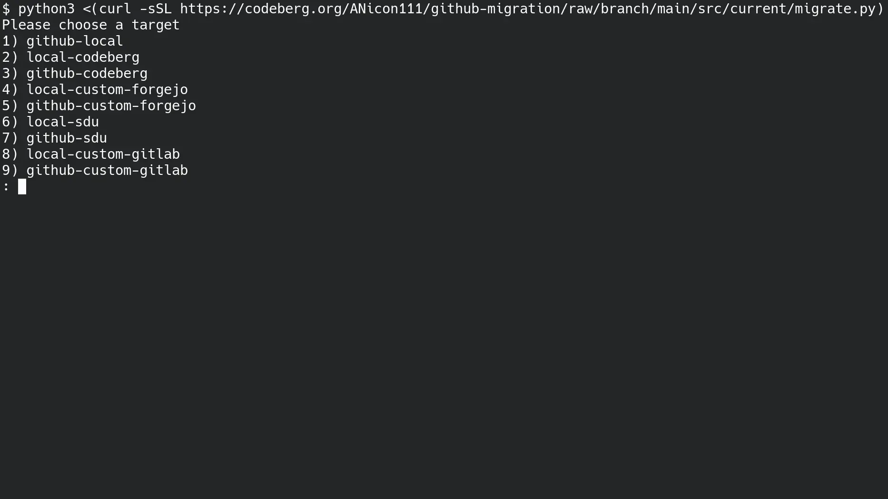
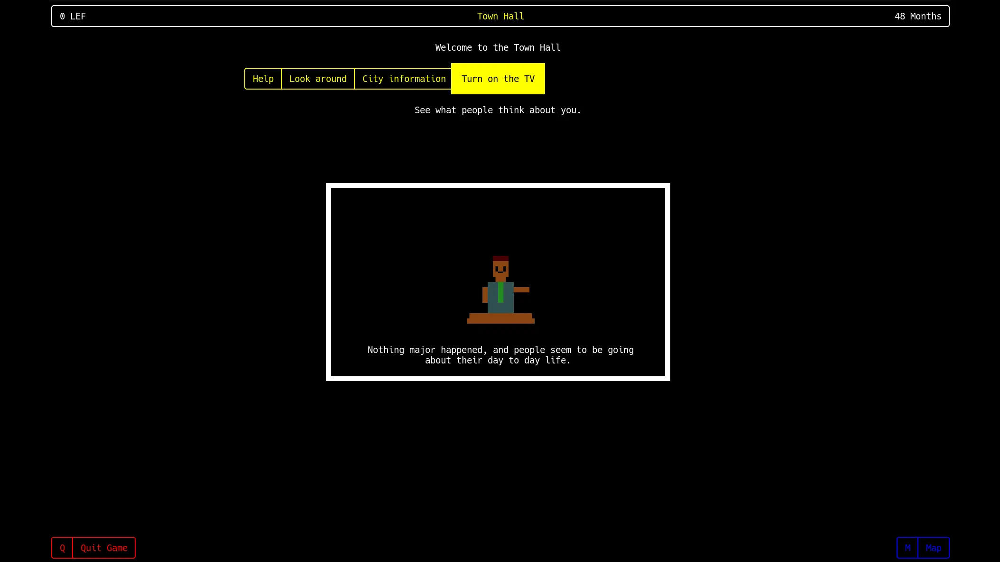
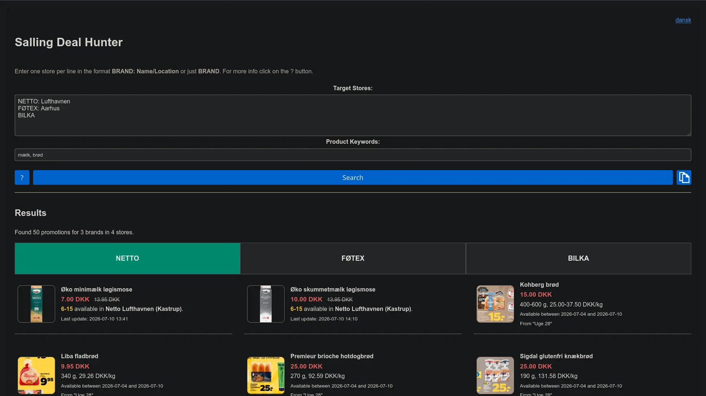
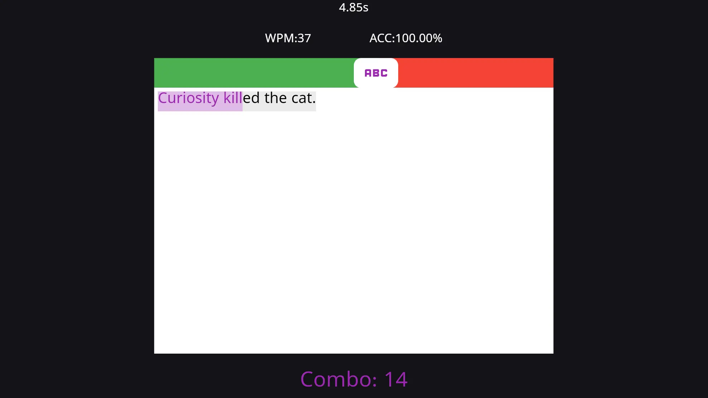
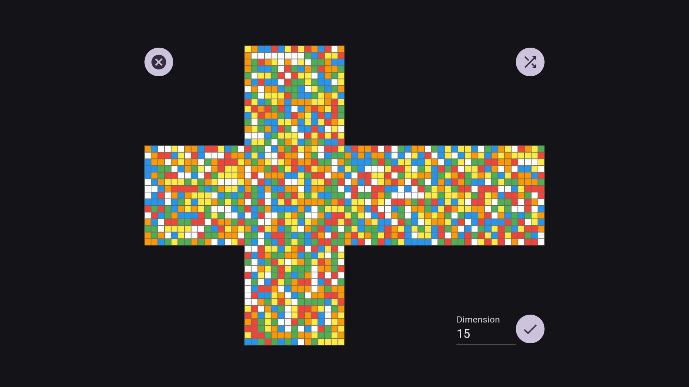
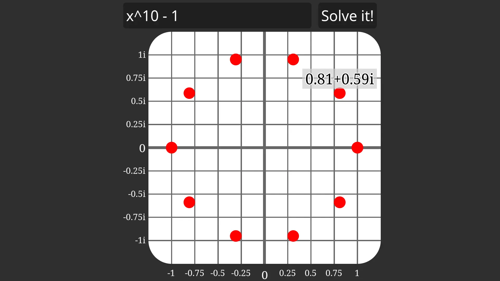
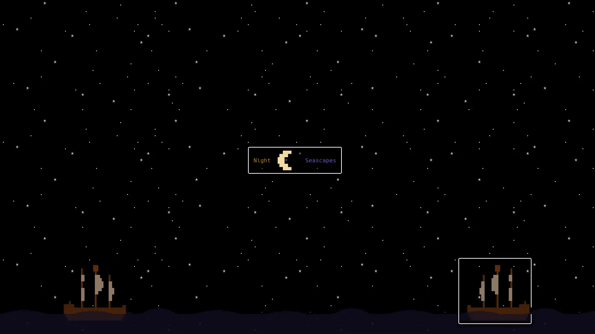

A tool for quickly migrating a GitHub repository written in Python in the context of the SDU Bachelor's project.
Clicking will copy the quick launch command

A world of zuul based terminal city management game written in C# in the context of the first SDU Semester Project.
Clicking will open the repository
`${currentYear - 2020}` years of programming I have obviously accumulated many
projects
that I
am more or less proud of. Below are the ones I have actually spent some time making them look somewhat
presentable.

A leaflet and clearance promotion fetcher for the Salling Group stores from Denmark written in JavaScript.
Clicking will open the application

A typing practicing game written in Flutter.
Clicking will open the application

An arbitrarily sized magic cube solver written in Flutter.
Clicking will open the application

An HTML frontend for the Rust Polynomial Solver Project.
Clicking will open the application

A high-performance terminal renderer based on ANSI control sequences written in Rust.
Clicking will open the repository
For all of you crawlers, scrapers, ai bots and code inspectors, here's a few more docs of stuff I did, along with local copies in case stuff goes down:
National Physics Olympiad qualified students document - source
District Physics Olympiad result document - source
District Informatics Olympiad results and prizes document - source